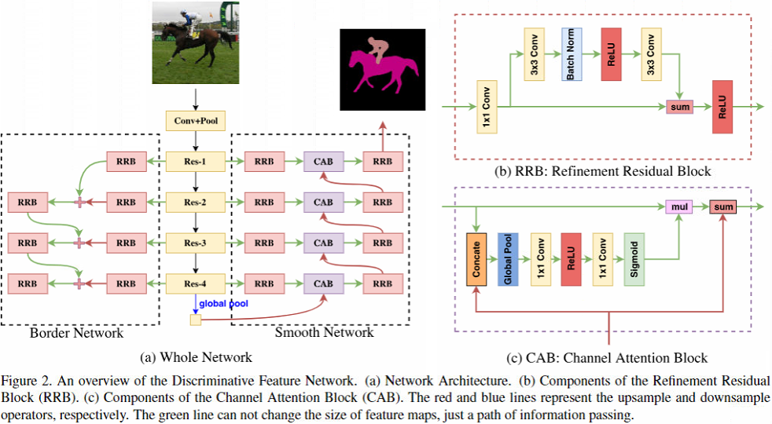

提出的问题
- 类内不一致问题：被分配到同一个标签的一块区域，像素之间表现不同
- 类间模糊问题：不同标签的邻近区域，像素之间表现相似
解决思想
从宏观角度考虑语义分割问题，将语义分割问题当做将一致的语义标签分配给事物类别的任务，将一个类别的像素当成一个整体去考虑，使用一种Discriminative Feature Network(DFN)，由Smooth Network和Border Network组成
Smooth Network用于解决类内不一致问题，目的是学习针对类内不一致性的鲁棒特征，主要考虑全局上下文信息和多尺度的特征，因此Smooth Network基于U型结构来获取多尺度上下文信息，并使用Channel Attention Block(CAB)逐步利用高级特征来选择低级特征。
Boder Network用于解决类间模糊问题，通过整合语义边界损失来使模型发现能增大类间距离的更具描述性的特征。
整体结构如下图所示：

一些问题
原文："Accordingto our observation, the different stages have different recognition abilities resulting in diverse consistency manifestation."，这里作者是如何观察到的，还有这里的"consistency"是指什么？